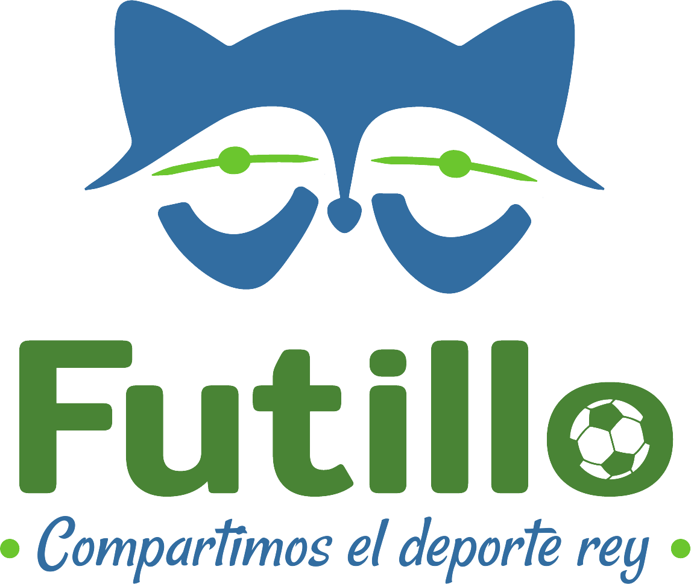
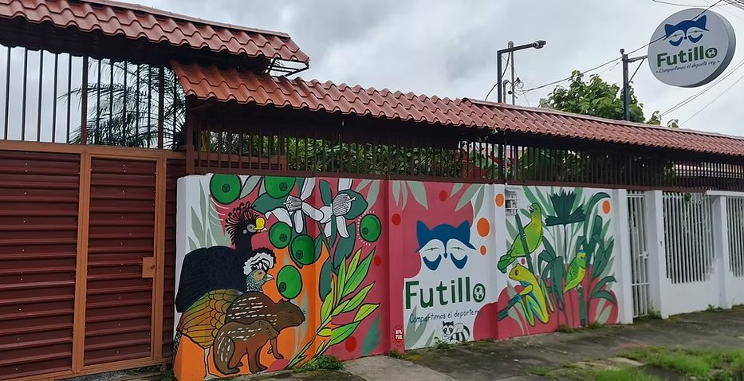
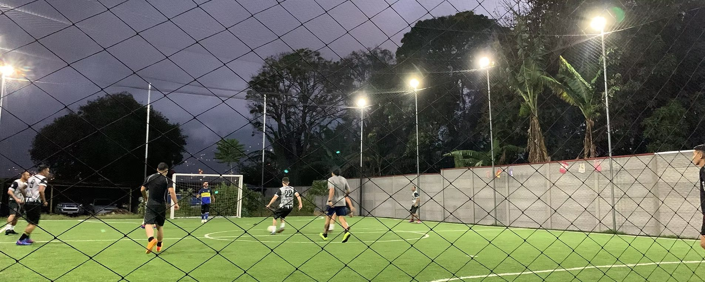
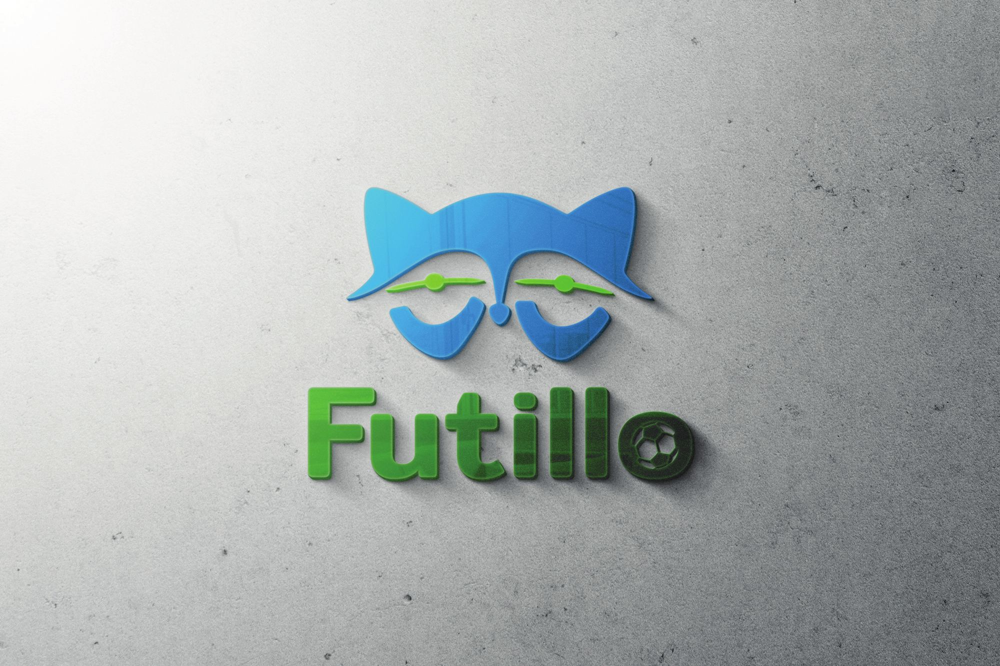
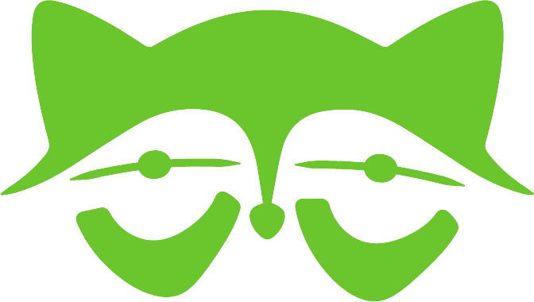

₡20.000
x hora

Jugada 01 · Saque inicial
Fútbol 5 en Hatillo, de día o bajo las luces.
Jugada 02 · El valor
₡20.000
x hora
₡10.000
x hora
Traer su propio rival
A convenir
Jugada 03 · La cancha de casa

Un espacio seguro en el centro de Hatillo para jugar con amigos, compañeros o la familia. Con parqueo gratuito, acceso cerrado con cámaras, gradería, camerino y áreas verdes donde antes había concreto.

Césped sintético para fútbol 5, cuidado y listo para su mejenga en cualquier época del año. Juegue con tacos de suela lisa, turf o futsala; la cancha es al aire libre, así que si llueve, se juega igual.


Es un animal que se adapta igual al campo que a la ciudad, y sale de noche: como quien llega a jugar después del trabajo. Sus orejas son las montañas que rodean el Valle Central, y en sus ojos se refleja una cancha de fútbol.
Jugada 04 · La repetición
Transmisión gratuita de goles, jugadas y el partido completo por YouTube o desde esta página. Para mostrar ese golazo.
Ver canal en YouTubeSin partidos en vivo en este momento
Vuelva más tarde o repase los últimos goles en nuestro canal.
Jugada 05 · Tiempo extra
Organice el torneo de su empresa, su barrio o su grupo de amigos con nosotros.
Celebre con una mejenga: cancha, gradería y espacio para compartir con los invitados.
Actividades de empresa, convivios y fiestas de fut, desde 3 horas.
Gratis para clientes, con acceso cerrado, cámaras y seguridad.
Espacios para aprender y compartir alrededor del deporte y la vida sana.
Clases y entrenamientos para mejorar su técnica y su condición física.
Baños y camerino para cambiarse antes y después del partido.
Jugada 06 · El silbato
Gradería, camerino y jardines